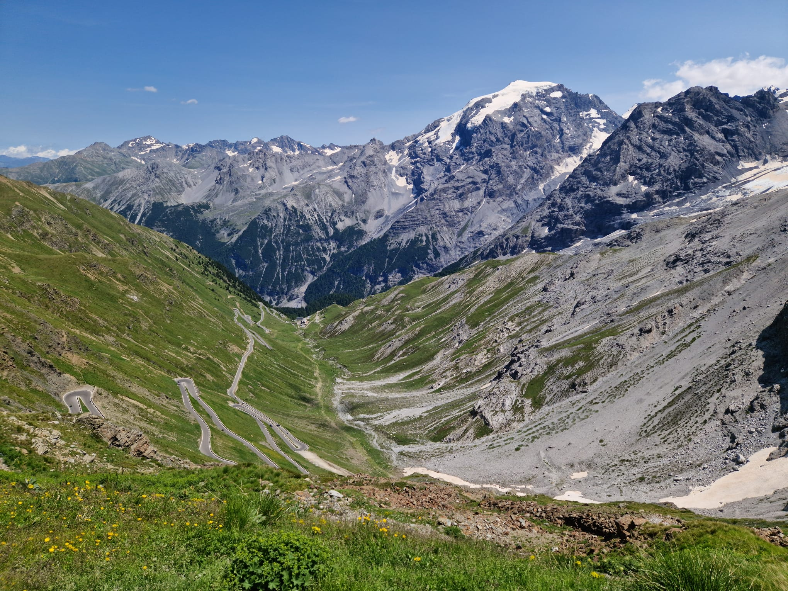

Over Mij
Introductie
Ik ben Anthonie Verkuil, een enthousiaste IT- student met een passie voor programmeren en technologie. Ik hou van het oplossen van problemen en het ontwikkelen van nieuwe oplossingen.
Hobbies
Ik ben een gamer en speel graag games zoals Minecraft, Phasmophobia en Satisfactory. Daarnaast vind ik het leuk om kleine projecten te doen, bijvoorbeeld zelf een likeur maken of een specifiek onderdeel ontwerpen. In mijn vrije tijd wandel ik ook graag, maar het liefst in de bergen tijdens een vakantie.

Bekijk mijn GitHub profiel